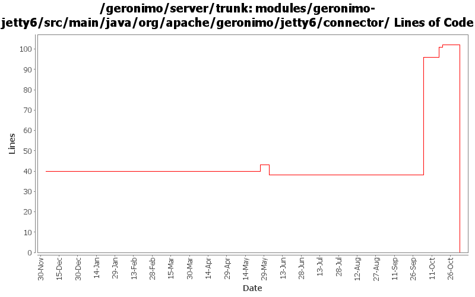

[root]/modules/geronimo-jetty6/src/main/java/org/apache/geronimo/jetty6/connector

| Author | Changes | Lines of Code | Lines per Change |
|---|---|---|---|
| Totals | 42 (100.0%) | 128 (100.0%) | 3.0 |
| akulshreshtha | 3 (7.1%) | 76 (59.4%) | 25.3 |
| djencks | 11 (26.2%) | 42 (32.8%) | 3.8 |
| gawor | 3 (7.1%) | 7 (5.5%) | 2.3 |
| pmcmahan | 1 (2.4%) | 2 (1.6%) | 2.0 |
| rickmcguire | 1 (2.4%) | 1 (0.8%) | 1.0 |
| prasad | 13 (31.0%) | 0 (0.0%) | 0.0 |
| kevan | 10 (23.8%) | 0 (0.0%) | 0.0 |
GERONIMO-3565. Modules distributed amongst framework/modules and plugins
0 lines of code changed in 13 files:
applied patch for GERONIMO-3472
3 lines of code changed in 1 file:
GERONIMO-3490 Adding LazyStatisticsProvider interface to deal with components that provide
statistics on demand.
11 lines of code changed in 1 file:
let's actaully log the exception. should help in debugging
3 lines of code changed in 1 file:
GERONIMO-3490 Adding JSR77 stats for Jetty connectors. This a substantially modified version
of the patch submitted by Viet H. N.
60 lines of code changed in 1 file:
just updated the display name: Select Channel to SelectChannel
1 lines of code changed in 1 file:
GERONIMO-3350 cleanup now-unused methods
4 lines of code changed in 1 file:
GERONIMO-3350 final touches on administration for web connectors
2 lines of code changed in 1 file:
GERONIMO-3246 Cleanup exception handling so stack traces for first failures are not discarded.
1 lines of code changed in 1 file:
GERONIMO-3034 GERONIMO-2655 New SelectChannel and AJP connectors. Also hook the connectors up to our thread pool
38 lines of code changed in 10 files:
GERONIMO-2773 - Removed minThreads, tcpNoDelay attributes from JettyConnector, and added protocol, Mark AJP as unsupported protocol
5 lines of code changed in 1 file:
GERONIMO-2537 Fix notices and src headers in recent jee5 updates. Update Web Console notice.txt w/ ibm donation information, add copyright to assembly notice files, and remove ASF v 1.1 license from source borrowed from xerces project
0 lines of code changed in 10 files: